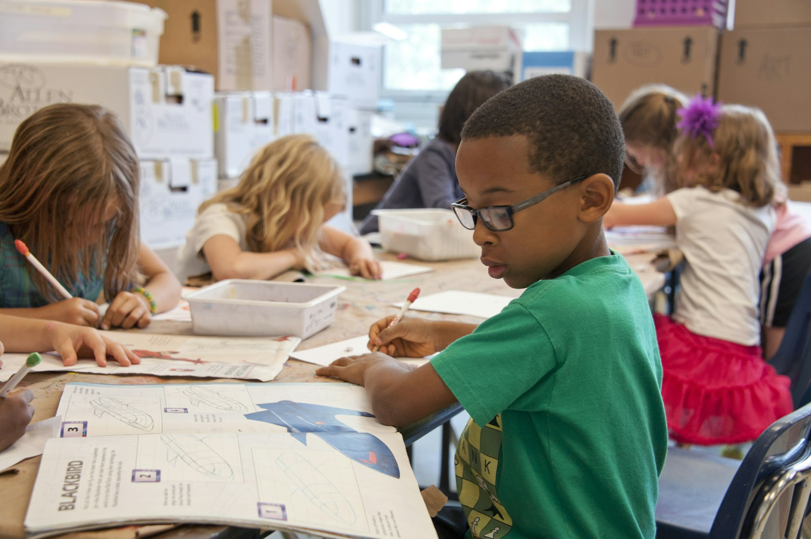
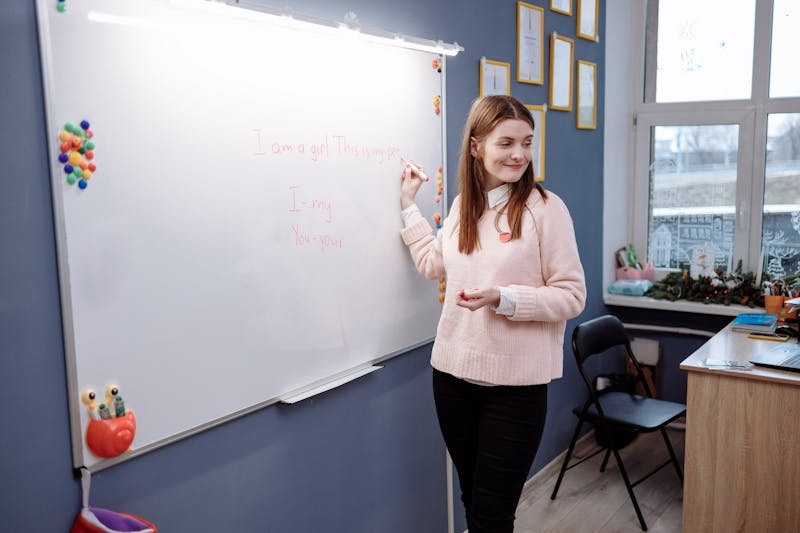
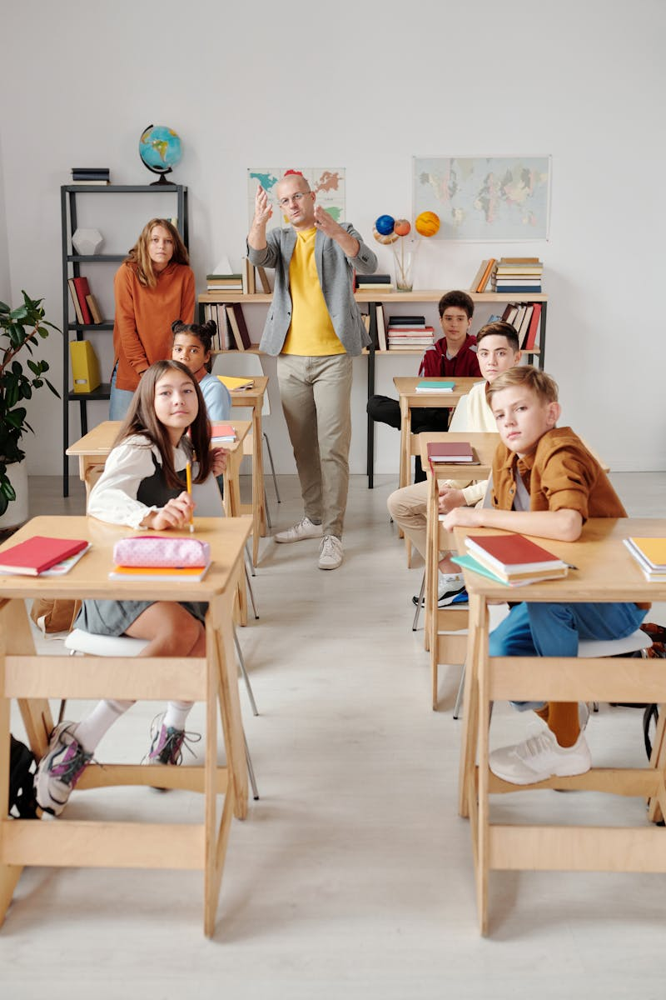
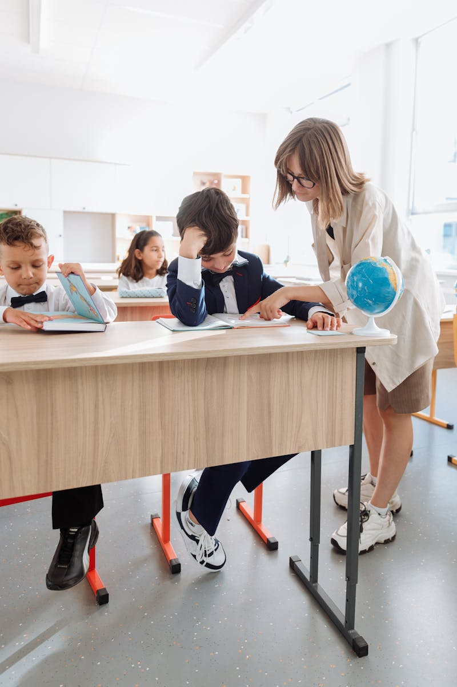
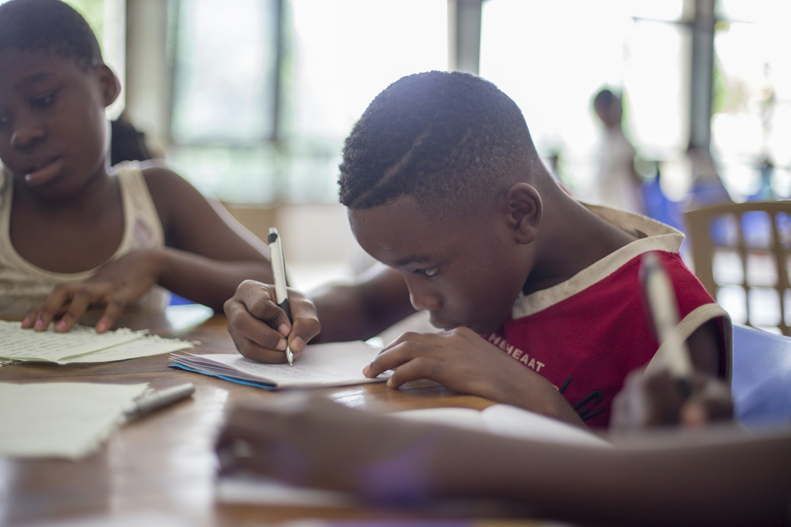
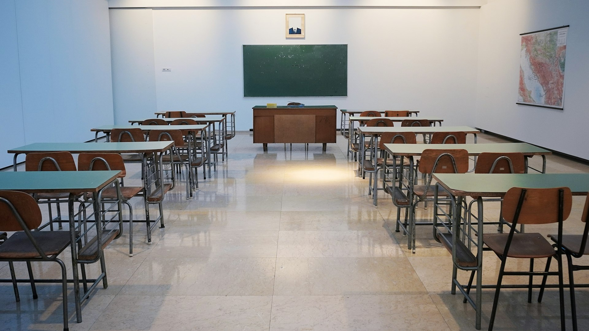

Premium English Academy · Daechi-dong
영어가
생각이 되는 순간
대치동에서 6명의 아이들이 함께 만드는 진짜 영어의 시작.
처음 한 마디가
세상을 바꿉니다
말하기를 두려워하던 아이가 자신의 생각을 영어로 표현하기까지.
플로우잉글리시가 함께한 12주의 변화.
귀가 열리는 시간
원어민 선생님의 자연스러운 영어에 노출되며 소리와 리듬에 익숙해집니다. 아직 말은 적지만, 이해의 폭이 넓어지는 시기.
입이 트이는 순간
짧은 문장으로 자신의 생각을 표현하기 시작합니다. 실수를 두려워하지 않는 환경에서 자연스럽게 발화량이 늘어갑니다.
생각이 자라는 영어
토론, 프레젠테이션, 에세이까지. 영어가 단순한 언어가 아닌 사고의 도구로 자리잡습니다.


생각이 자라는 공간
따뜻한 조명, 책으로 가득한 선반, 그리고 편안한 토론 테이블.
아이들이 영어로 생각하기 시작하는 곳.
나이가 아닌
언어 성장 단계에 맞춘 커리큘럼
7세부터 16세까지, 각 아이의 현재 영어 수준과
성장 속도에 맞는 4단계 프로그램을 운영합니다.
Kids English
그림책과 노래로 시작하는 자연스러운 첫 영어. 놀이처럼 시작해서 습관으로 남깁니다.
월 ₩280,000

플로우잉글리시 Kids English 수업 현장


Junior Speaking
토론과 발표 중심의 집중 스피킹. 자신의 생각을 영어로 논리적으로 전달하는 힘을 기릅니다.
월 ₩350,000
Academic Writing
에세이, 리서치 리포트, 크리티컬 씽킹. 고등 영어와 유학 준비를 위한 심화 과정.
월 ₩450,000
6명이 만드는
대화의 밀도
한 교실에 최대 6명. 모든 아이가 매 수업 15분 이상 영어로 발화합니다. 듣기만 하는 수업은 없습니다.
- 최대 6명 소규모 클래스
- 수업당 15분+ 개인 발화 시간
- 원어민 + 한국인 바이링구얼 팀티칭
- 월별 개인 성장 리포트 제공

아이를 아는 선생님
원어민의 자연스러움과 한국인 선생님의 섬세함이 만나
아이의 언어 성장을 이끕니다.

Sarah Kim
원장 · Columbia University TESOL
15년간 아이들의 첫 영어를 함께해온 전문가. 아이마다 다른 성장 속도를 존중하는 교육 철학을 지키고 있습니다.

James Park
Speaking Lead · UCLA Linguistics

이수현
바이링구얼 코치 · 연세대 영어영문학

부모님이 먼저
변화를 느낍니다
영어학원 전전하다가 여기 와서 처음으로 아이가 집에서 혼자 영어 문장을 말하더라고요. 3개월 만에 이런 변화라니, 정말 놀랐습니다.
윤서 어머니
Kids English · 2학기째
6명이라 걱정했는데 오히려 아이가 말할 기회가 훨씬 많다고 좋아해요. 매달 오는 성장 리포트도 꼼꼼해서 믿음이 갑니다.
도현 어머니
Junior Speaking · 4학기째
에세이 쓰기를 싫어하던 아이가 이제는 스스로 영어 일기를 씁니다. Sarah 원장님의 피드백이 정말 세심하세요.
민준 아버지
Academic Writing · 3학기째
함께 키우는 영어 습관
월간 학부모 브리핑, 분기별 스피킹 발표회, 가정 연계 리딩 프로그램으로
교실 밖에서도 영어가 이어집니다.
가정 연계 리딩
매주 레벨에 맞는 영어 도서를 추천하고, 읽기 가이드를 함께 제공합니다.

분기별 스피킹 발표회
3개월간의 성장을 무대 위에서 직접 보여주는 시간. 부모님도 함께합니다.

월간 학부모 브리핑
수업 진행 상황, 아이의 강점과 보완점을 매달 투명하게 공유합니다.
영어 습관 챌린지
4주 단위 영어 습관 만들기. 매일 10분의 작은 실천이 큰 변화를 만듭니다.
자주 묻는 질문
네, 모든 클래스는 최대 6명으로 운영됩니다. 6명을 초과하는 경우 새로운 반을 개설하며, 대기 등록도 가능합니다. 소규모 수업이 플로우잉글리시의 핵심 원칙입니다.
무료 레벨테스트는 약 30분간 진행됩니다. 원어민 선생님과의 1:1 대화, 간단한 리딩/라이팅 체크, 그리고 학부모 상담으로 구성됩니다. 테스트 후 아이에게 가장 맞는 프로그램과 반을 추천해드립니다.
매달 제공되는 성장 리포트에는 수업 참여도, 발화량 변화 추이, 강점 영역, 보완이 필요한 부분, 그리고 담당 선생님의 개인 코멘트가 포함됩니다.
레벨테스트 후 1회 체험 수업을 무료로 제공합니다. 실제 수업 환경에서 아이가 적응하는 모습을 직접 확인하신 후 등록 여부를 결정하실 수 있습니다.
Kids English는 월·수·금 또는 화·목 (오후 3:30-5:00), Junior Speaking은 월·수·금 (오후 5:30-7:00), Academic Writing은 화·목·토 (오후 5:30-7:30)에 운영됩니다. 토요 집중반도 별도 운영합니다.
물론입니다. 분기별 레벨 재평가를 통해 아이의 성장 속도에 맞는 반으로 유연하게 이동할 수 있습니다. 담당 선생님과 상담 후 결정합니다.
